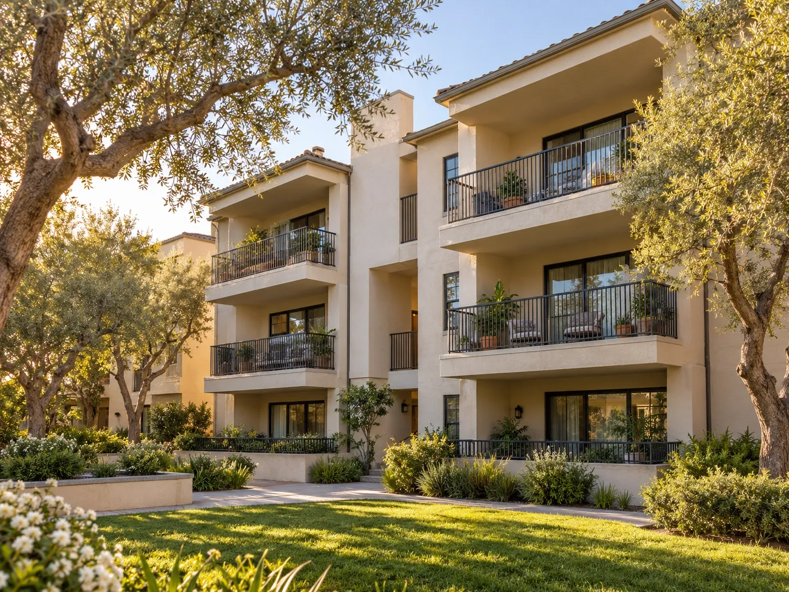

Blog
Local San Fernando Valley lifestyle, neighborhood, and real estate stories from Dominique.

Posted October 11, 2026
Can You Rent Your San Fernando Valley Home to a Film Crew?
Yes — a home can earn income as a production location, subject to the agreement and local requirements.
Yes — a home can earn income as a production location, subject to the agreement and local requirements. The production needs your written permission, and in the City of Los Angeles commercial on-location filming generally requires a filming permit on private property as well as public property. FilmLA coordinates permits; an owner’s permission does not replace the city permit. This isn't theoretical for me. Before I became a Realtor, I ran a property management company in Atlanta where we rented
Posted October 11, 2026
What Is a 2-1 Mortgage Rate Buydown, and Does It Work in the San Fernando Valley?
A 2-1 buydown temporarily lowers your mortgage rate — 2 percentage points below your note rate in year one, 1 point below in year two — and then your payment steps up to the full rate in year three.
A 2-1 buydown temporarily lowers your mortgage rate — 2 percentage points below your note rate in year one, 1 point below in year two — and then your payment steps up to the full rate in year three. The cost is usually paid by the seller as a closing-cost concession, deposited into an escrow account at closing. This is not a permanent rate reduction, and it is not an adjustable-rate mortgage. Your loan is a standard fixed-rate mortgage; only
Posted October 11, 2026
What Does It Cost to Buy a Home in Chatsworth, California Right Now?
Redfin’s Chatsworth market page, checked October 11, 2026, shows a median sale price of $929,500 and median time on market of 49 days for its displayed August 2026 reporting period.
Redfin’s Chatsworth market page, checked October 11, 2026, shows a median sale price of $929,500 and median time on market of 49 days for its displayed August 2026 reporting period. These are closed-sale indicators, not a quote for a particular home or a live October listing price. That headline number tells you the middle of the market — but Chatsworth actually has three very different price lanes, and knowing which one fits your budget changes your whole search strategy.
Posted October 10, 2026
How to Stage a Living Room That Sells: 7 Steps From a Designer-Turned-Realtor
Seven practical living-room staging steps: edit clutter, choose a focal point, layer light, balance furniture, add textiles and greenery, then photograph the room.
A well-staged living room clears visual clutter, centers the space around a focal point, layers lighting, uses furniture that fits, adds inviting textiles and greenery, and photographs clearly. You may not need new furniture. Start by editing what is already there.
Posted October 9, 2026
Los Angeles Short-Term Rental Rules in 2026: What Valley Homeowners Must Know Before Hosting
Know which Los Angeles rental rules apply to your address, including primary residence eligibility, registration, ADUs, night limits, and taxes.
In the City of Los Angeles, home-sharing generally requires your primary residence, city registration, and a registration number on advertisements. Standard registration allows up to 120 days per calendar year; extended home-sharing needs separate approval. Unincorporated Los Angeles County has its own program, so confirm your property’s jurisdiction before planning a rental.

Posted October 8, 2026
California’s Condo Crisis: What SB 326 Means for Buyers and Sellers in 2026
Before buying or selling a California condo, understand balcony inspections, special assessments, HOA reserves, insurance, and lender project reviews.
California’s SB 326 balcony inspection requirements can reveal repairs that an HOA’s reserves cannot cover. Those costs may become special assessments for owners. Combined with condo lending changes and insurance requirements, the association’s condition and financial health deserve as much attention as the unit itself.
Posted October 7, 2026
Having Children in Your 40s
Preparing your home, support system, and finances for parenthood in your forties.
Having children in your forties can bring joy, questions, and a different set of priorities. There is no single timetable that makes a family complete. If you are considering pregnancy, an early conversation with your obstetrician–gynecologist can help you understand your own health and options. Alongside that conversation, think about the support, time, and home environment that would make daily family life work.
Posted October 6, 2026
401K Matters
Understanding your workplace retirement plan while balancing today’s expenses and tomorrow’s home goals.
A 401(k) is a workplace retirement plan that can help you prepare for life beyond your working years. It deserves a place in your financial plan alongside housing, current bills, and emergency savings. Start by understanding what your employer’s plan offers and how its contributions fit your budget.
Posted October 5, 2026
Is It Time for a Divorce? Finding Clarity Without Rushing Your Heart
A compassionate space to reflect, care for yourself, and consider your next chapter without pressure.
Sometimes the hardest part is not making the decision. It is admitting you are even asking the question. You may still love your partner. You may remember what was good. You may be tired, afraid, angry, hopeful, or all of those things at once.

Posted October 4, 2026
The Power of a Budget: Give Every Dollar a Purpose
Why assigning every dollar a job can strengthen savings and help you plan for what matters.
A budget is not a restriction on your future. It is a way of choosing it. When you decide where your income goes before the month begins, you make room for the things that matter—your bills, your goals, your peace of mind, and even the things you enjoy.

Posted October 3, 2026
Studio City or Valley Village, Which One Should I Choose?
Comparing Studio City and Valley Village? Look at price, neighborhood feel, homes, dining, transportation, and what daily life may feel like in each area.
If you are choosing between Studio City and Valley Village, budget may narrow the decision before anything else does. Dominique’s city pages, with market data current as of August 2026, place Studio City’s median home value at approximately $1.8 million to $1.9 million, while Valley Village is approximately $1.1 million to $1.14 million.
Posted October 2, 2026
Van Nuys or Reseda, Which One Should I Choose?
Van Nuys and Reseda can land in a similar price range, so the better choice may come down to the home, commute, neighborhood feel, and what matters most day to day.
Dominique’s city pages, with market data current as of August 2026, place Van Nuys at approximately $817,000 to $830,000 for the median home value, while Reseda is approximately $805,000 to $810,000.

Posted October 1, 2026
Is My Property a Good Fit for Airbnb?
Before you list a home on Airbnb, make sure the property, local rules, owner situation, and day to day realities of hosting actually line up.
A beautiful home does not automatically mean it can be used as an Airbnb. Before thinking about furniture, photos, guests, or nightly rates, an owner needs to know whether short term rental use is actually allowed for that property.
Posted September 30, 2026
Homeschool or Public School?
A practical look at schedule, flexibility, social life, cost, and what families may want to consider when choosing how their child learns.
Choosing between homeschool and public school can feel like a huge decision because it affects more than academics. It changes the daily schedule, the way children socialize, how parents use their time, and how much control a family has over the learning environment.
Posted September 29, 2026
Coffee or Tea?
Coffee or tea, which fits your routine better? Compare caffeine, flavor, convenience, cost, and the experience of each.
Coffee or tea sounds like a simple question, but the answer usually comes down to routine, flavor, caffeine, and the kind of morning you like to have.

Posted September 28, 2026
Can the Dodgers Do a Threepeat?
The Dodgers are chasing a third straight World Series title. Here is what makes the 2026 run historic, what stands in the way, and why Los Angeles is locked in again this October.
The Dodgers are not simply trying to win another World Series. They are trying to become the first Major League team since the 1998 through 2000 Yankees to win three championships in a row. Los Angeles entered October as the back to back defending champion, and no National League team has completed a World Series threepeat.

Posted September 27, 2026
Football Season Is Back, Does Your Team Play at SoFi This Year?
SoFi Stadium has a packed 2026 NFL calendar. Check which visiting teams are coming to Los Angeles for Rams and Chargers home games this season.
SoFi Stadium is home to both the Rams and Chargers, which means Southern California gets a long list of visiting NFL teams every season. If you follow a team outside Los Angeles, this is the part of the schedule worth checking.
Posted September 26, 2026
The Different Leagues of College Football
College football feels different depending on the conference, the school, and the traditions. Here is how the 2026 landscape connects local USC and UCLA fans to a much bigger national season.
The Football Bowl Subdivision, usually called FBS, is the highest level of NCAA Division I college football. Within FBS, schools are grouped into conferences.
Posted September 25, 2026
Places to Eat in the San Fernando Valley
From sunset views and special occasion dining to neighborhood favorites and intimate tasting menus, the San Fernando Valley has plenty of places worth putting on your list.
One of the best things about living in the San Fernando Valley is that a good meal rarely requires leaving the Valley. You can plan a special dinner with a view, sit down for a tasting menu, grab a relaxed neighborhood meal, or meet friends somewhere lively without making the night about a long drive across Los Angeles. The Valley is spread out, so the easiest way to explore it is to think about the kind of experience you want first, then choose the neighborhood.
Posted September 24, 2026
What to Do in the San Fernando Valley for Halloween
Pumpkin patches, spooky markets, outdoor movies, haunted attractions, and family events give the Valley plenty of ways to celebrate Halloween throughout October.
Halloween in the San Fernando Valley can easily turn into a full month of fall activities. In October 2026, the Valley has pumpkin patches, community markets, family events, outdoor Halloween movies, theatre experiences, and haunted attractions. That means you can choose something relaxed for younger kids, something social for the whole family, or something scarier for adults and older teens.
Posted September 23, 2026
Trick or Treating in the San Fernando Valley
Whether your family wants traditional neighborhood trick or treating or a community event with candy stations, the Valley has several ways to plan Halloween night.
Trick or treating in the San Fernando Valley can mean walking a residential neighborhood on Halloween night, going to a school or community trunk or treat, or choosing an organized event with candy stations. The best option depends on the age of the kids, how much walking your group wants to do, and whether you prefer a neighborhood experience or a planned event with a set start and end time.